|
Wenshuang's (張溫雙) Illustrations Our niece 溫雙, Meihui's younger daughter, is an illustrator. She's done three books (that we know of), the last one, the one which I've pulled just a few of the illustrations below from, is her most ambitious. The 175-page hard-bound book, 鹽村凐跡 (Salt Village: Faded Traces), is about fishing and the fishing tools and processes from Taiwan's past. Here are just a few illustrations from the book. 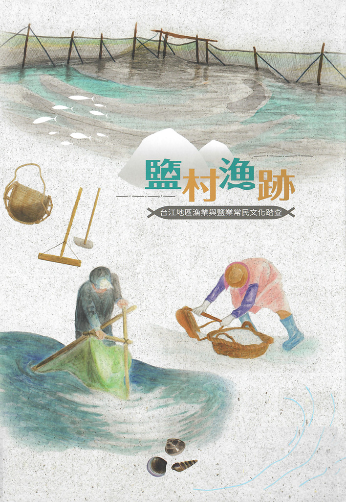 The cover. 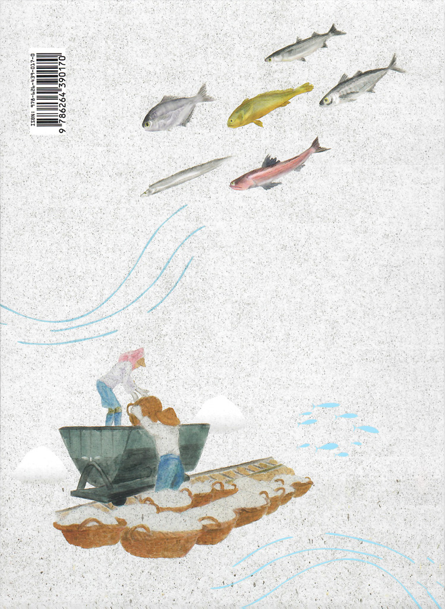 The back. 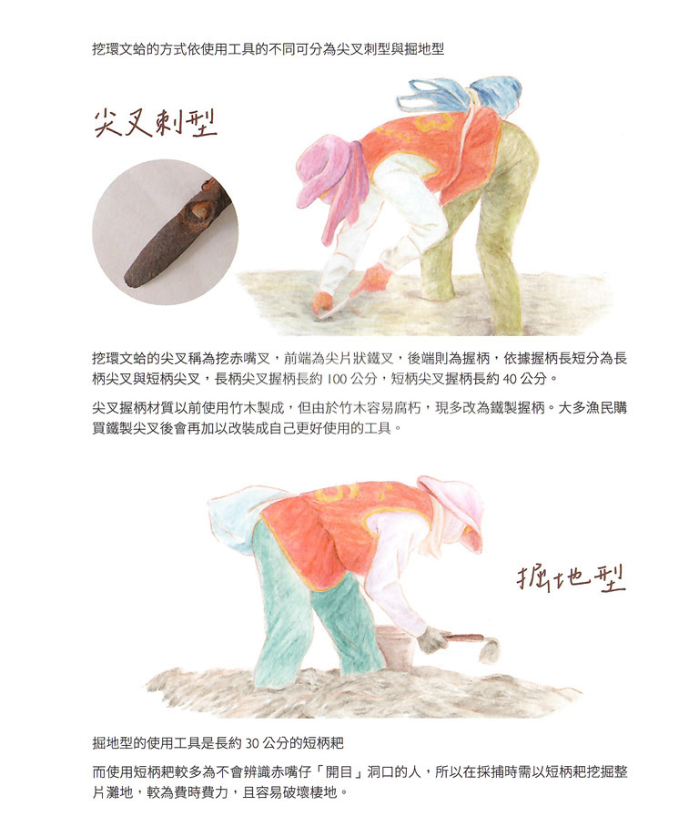 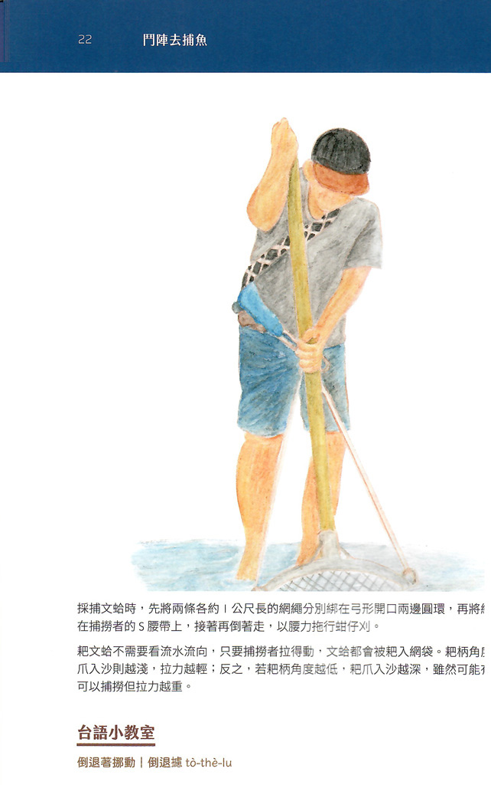 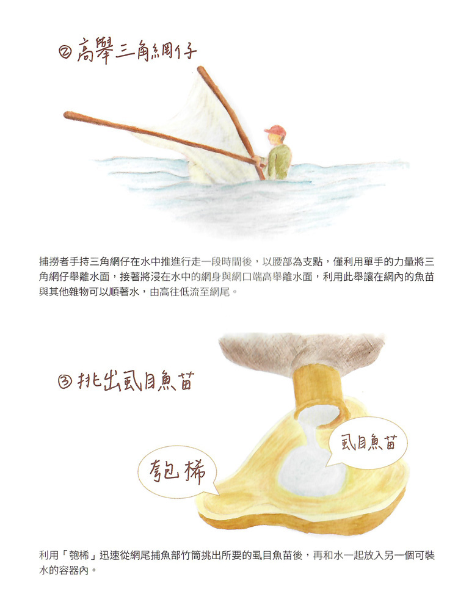 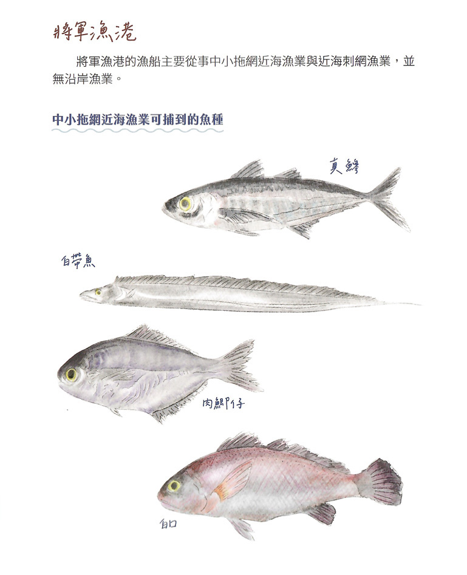 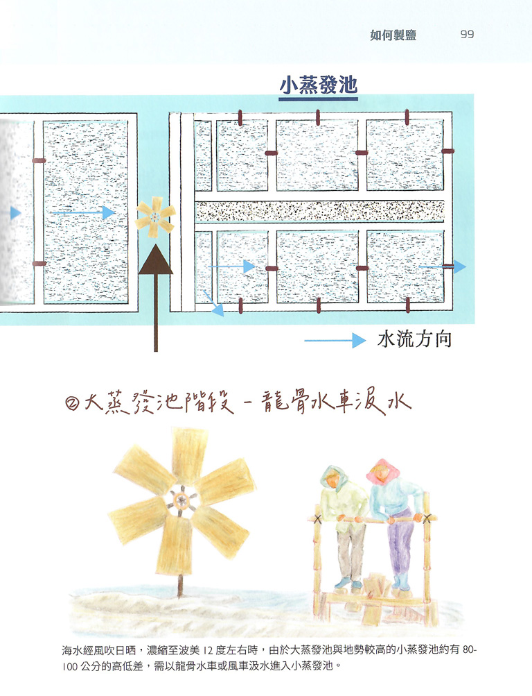 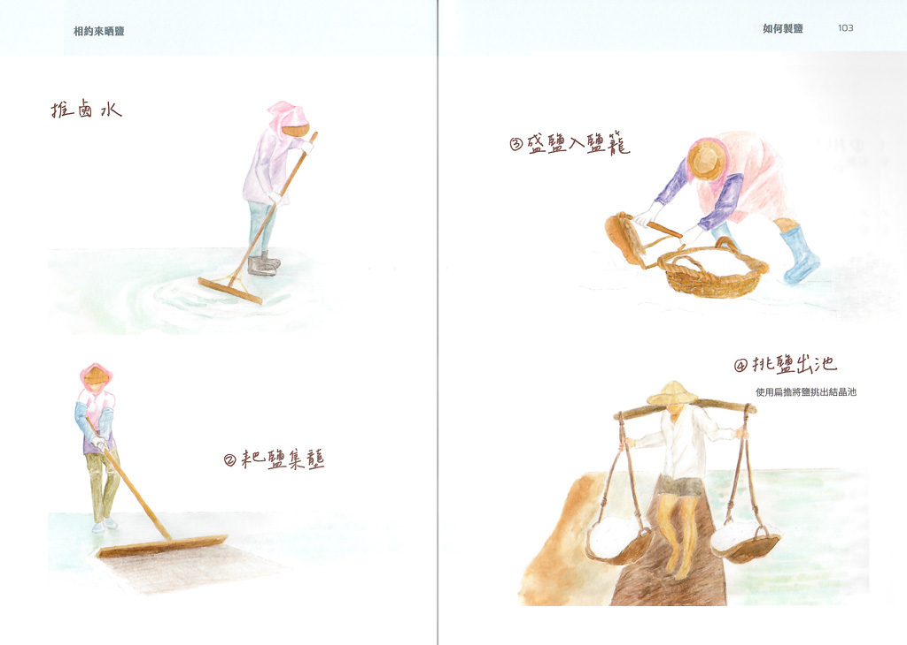 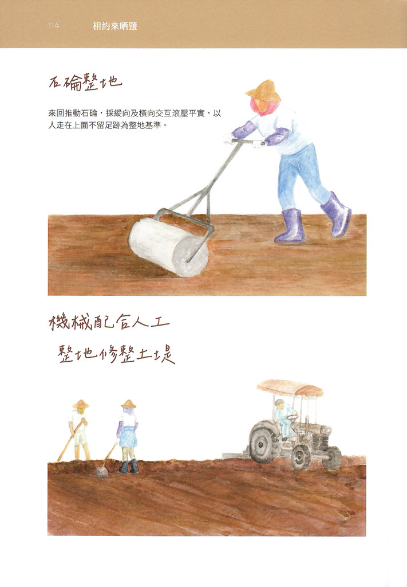 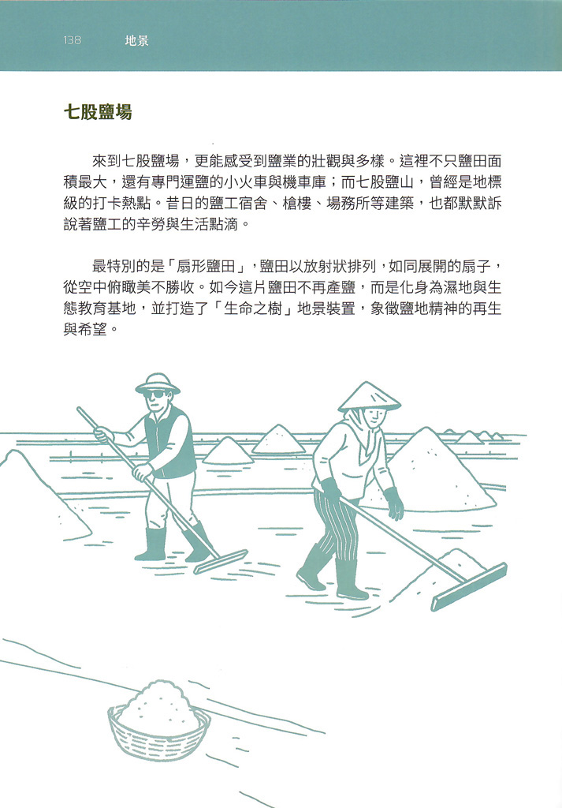 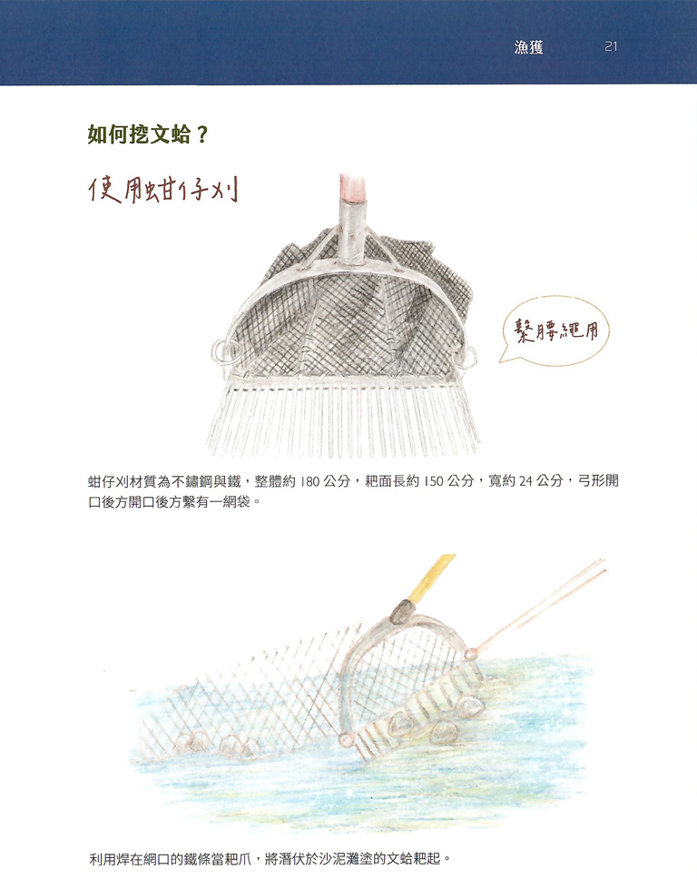 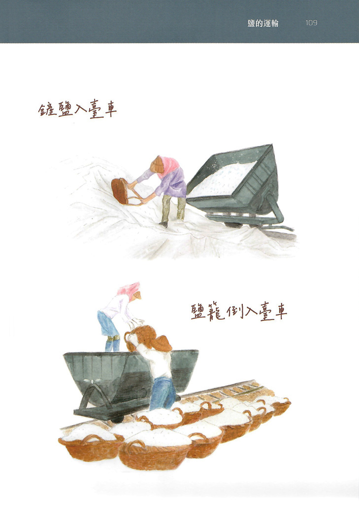 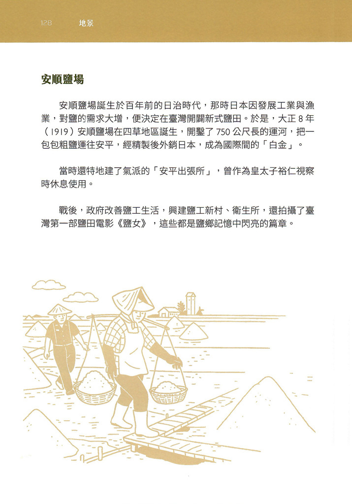 |